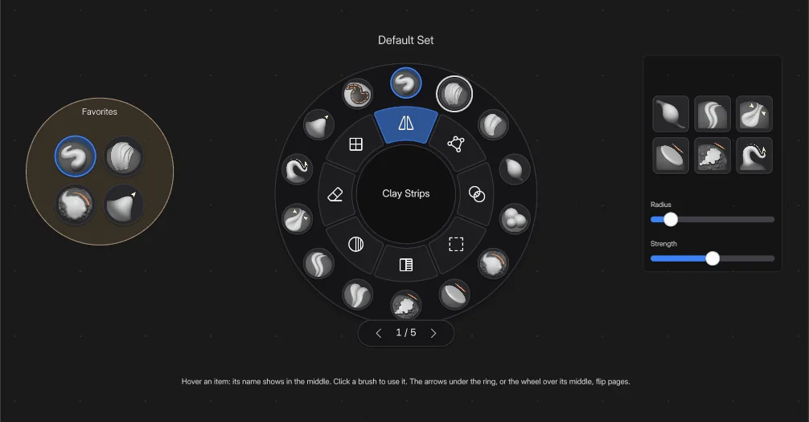

Demo files are small, finished scenes that show what you can build. Open one to try it, take it apart, or copy what you like into your own work.
Control Panels
Studio Control Panel
A small product-shot scene (three lights, Suzanne, a cube and a sphere, a turntable animation) with a control panel for it: light power, colour, size and shadows, the scene's render and playback settings, modifiers, material colours and a camera preview.
Control Panels
Viewport Shading Panel
A control panel for the viewport and the scene: shading buttons and X-Ray for the 3D Viewport, object display settings, the world colour, the camera's lens and depth of field, the frame range and the render engine and resolution. It comes with a small scene to try it on.
Control Panels
Animation Controls
Animation controls on a canvas: playback buttons, the current frame, the frame and preview ranges, the frame rate, Auto Keying and the keyframe type, Insert and Delete Keyframe. It comes with a bouncing ball to try them on.
Modes & Pages
FlexSpace Studio
One canvas that follows Blender's mode and the active object: a page for each mode, and the scene for all of them, with a Home page when nothing else fits. The tower in Object Mode shows its Geometry Nodes controls, the shader ball a Look Dev page for its material, world and lights, Sculpt Mode a base head, Texture Paint a box, Weight Paint a rigged arm and Draw Mode a Grease Pencil drawing. Switch the mode, select an object, or click a Try it button, and the canvas shows that page.
Brushes
Sculpt Wheel
A Ring Menu for Sculpt Mode: every Essentials sculpt brush in its outer ring (the tab under it flips pages), symmetry, automasking, Dyntopo, Voxel Remesh and mask operators in its inner ring, the hovered item's name in the middle. Around it, a round Favorites frame of round brush buttons and a block of square ones with the radius and strength. It opens in Sculpt Mode on a base head.
Armature Pickers
Rigify Human Picker
A Rigify human rig with a picker in three tabs. Body: torso, IK / FK limbs with IK/FK switches, tweaks, rig settings and bone collection toggles. Face: every face control drawn on an anime face (lids, brows, lips, nose, cheeks, jaw, ears, teeth and tongue), a gaze pad with eyes, mouth pads and face bone collection toggles. Hands: every finger.
Armature Pickers
Simple Biped Picker
A small hand-made biped rig (no Rigify) with a picker: torso, arms, legs and IK hands, mirrored left and right. A Hand Space enum switches what each IK hand follows (World, Chest, Head), knobs blend the arms between IK and FK, and switches show or solo bone collections.
Armature Pickers
Rigify Male Body Picker
An adult male Rigify human with five toes per foot, and a body chart picker in four tabs, drawn over the character art. Body: the body split into regions, IK hands and feet with IK/FK switches, poles, spine and tweak controls. Hands: every finger segment, large. Feet: every toe. Face: every face control on the male anime face (lids, eyes, brows, cheeks, nose, lips, jaw, teeth and tongue), a gaze pad drawn as eyes that moves the eye target, mouth pads, knobs and face bone collection toggles. Left is blue, right is red.
Armature Pickers
Rigify Female Body Picker
An adult female Rigify human with five toes per foot, and a body chart picker in four tabs, drawn over the character art. Body: the body split into regions, IK hands and feet with IK/FK switches, poles, spine and tweak controls. Hands: every finger segment, large. Feet: every toe. Face: every face control on the female anime face (lids, eyes, brows, cheeks, nose, lips, jaw, teeth and tongue), a gaze pad drawn as eyes that moves the eye target, mouth pads, knobs and face bone collection toggles. Left is blue, right is red.
Armature Pickers
Rigify Character Picker
A rigged male base mesh with its Rigify rig (face included) in a clay studio, and a picker in four tabs drawn over the character art. Body: the body split into regions, IK hands and feet with IK/FK switches, poles, spine and tweak controls, rig settings and bone collection toggles. Hands: every finger segment. Feet: the IK, FK and heel controls. Face: the face controls drawn on a male face, teeth and tongue, a gaze pad with eyes and mouth pads.
Open a demo#
There are three ways in:
- The Open a Demo link on the card in the middle of an empty editor.
- Help > Demo Files in the header of the editor.
- Preferences > Add-ons > FlexSpace: the Demo Files section lists every demo with its picture.
In the editor, the demo browser opens over it:

- The categories on the left group the demos: control panels, modes and pages, brushes, armature pickers.
- Type to search: the cards show the demos whose title or description has the words.
- Click a card to choose it, then Open in New Window. A double-click, or Enter, opens it right away.
- Esc, a right click or a click outside the browser closes it.
From the preferences, a dialog shows the demo with its Open in New Window button.
A copy in its own window#
A demo always opens in another Blender window, as a copy of the demo file in a temporary folder.
- Your open file and its window are not touched. Keep working in it while the demo is open.
- The copy is temporary. Use File > Save As to keep it anywhere you like.
- The demo file that comes with FlexSpace never changes. Open it again as new, as many times as you like.
FlexSpace Studio#
FlexSpace Studio shows how one canvas follows Blender's mode. It has a Home page and a page for each mode (Object, Look Dev, Sculpt, Texture Paint, Weight Paint and Draw), and a scene with an object for each one.
- It opens in Object Mode on the Object page.
- Home shows when no other page fits, for example in Object Mode with the head selected. Its buttons take you to every other page.
- Change the mode with Ctrl+Tab or the mode menu in the 3D Viewport header, and the canvas shows that mode's page.
- Or click a Try it button in the note at the top of a page: it selects the right object, frames it and enters the mode.
The recipes build it page by page (see Recipes).
Sculpt Wheel#
Sculpt Wheel is a Ring Menu for Sculpt Mode. It opens in Sculpt Mode on a base head.
- The outer ring has every Essentials sculpt brush. The everyday ones are on the first page; click the tab under the ring for the others.
- The inner ring has X symmetry, automasking, Dyntopo, Voxel Remesh and mask operators.
- Next to it are a round Favorites frame of round brush buttons, and square brush buttons with the radius and strength.


ScreenshotSeeing the lights#
Some demos drive lights, the world or materials. Their 3D Viewport opens in Material Preview with Scene Lights and Scene World on, so you see the changes.